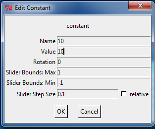
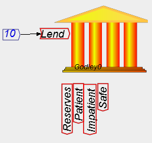
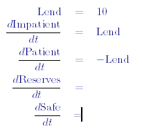
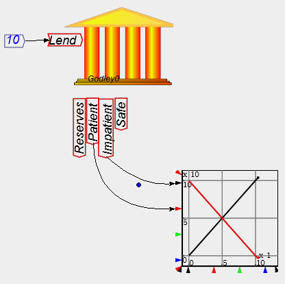
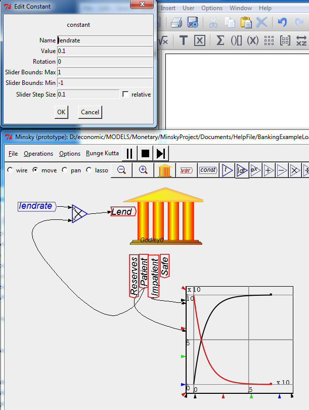
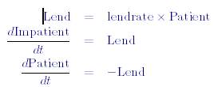

The entries in the Godley Table represent flows of money, which are denominated in money units per unit of time. The relevant time dimension for an economic simulation is a year (whereas in engineering applications, the relevant time dimension is a second), so whatever you enter there represents a flow of money per year.
You define the value of flows by attaching a constant or variable to the input side of the flow into the bank as shown on the Canvas. For example, you could assign Lend a value of 10 (which would represent a loan of $10 per year by Patient to Impatient) by:
Creating a constant called 10, with a value of 10:

And attaching this to the input side of Lend:

What you have now defined is an annual flow from Patient to Impatient of $10. In the dynamic equations this model generates, Minsky converts all amounts in accounts to positive sums--it shows the financial system from the point of the overall economy, rather than from the point of view of the bank:

If you attach a graph to the accounts at the bottom of the bank block, you will see the impact of this flow over time on the balances of the two accounts. Patient's account begins at $100 and falls at $10 per year, while Patient's account begins at $0 and rises by $10 per year.

Obviously this will result in a negative total worth for Patient after 10 years, so it is not a realistic model. A more sensible simple model would relate lending to the amount left in Patient's account (and a more complex model would relate this to many other variables in the model). That is done in the next example, where a constant "lendrate" has been defined and given the value of 0.1, and Lend is now defined as 0.1 times the balance in Patient's account. This now results in a smooth exponential decay of the amount in the Patient account, matched by a rise in the amount in Impatient account.

This is because the equation you have defined is identical to a radioactive decay equation, with the amount in the Patient account falling at 10 percent per year:

Note however that there are now wires crossing over other wires? There is a neater way to define flows.